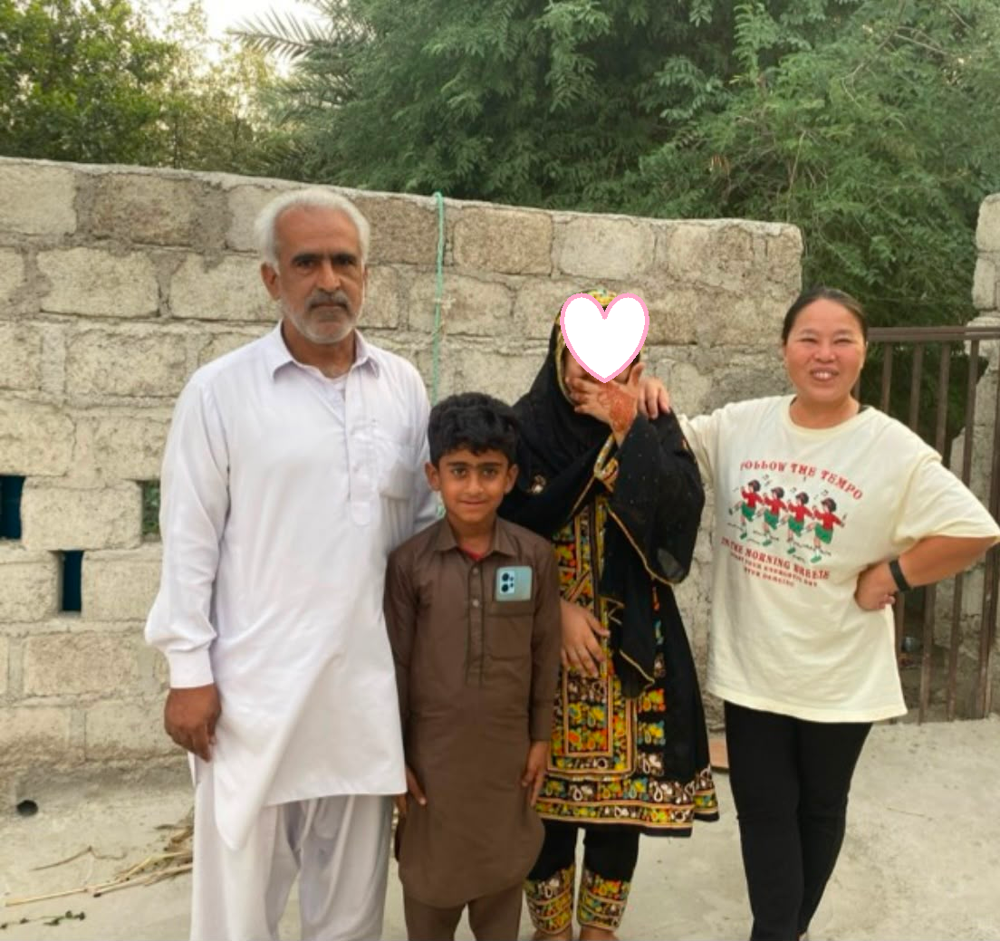
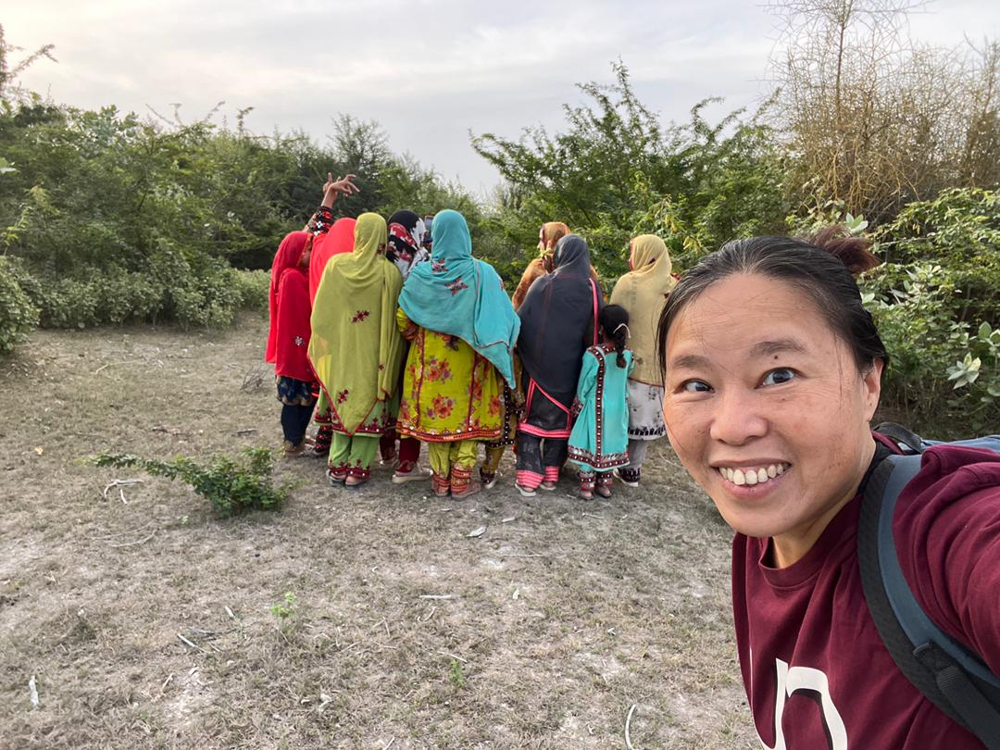
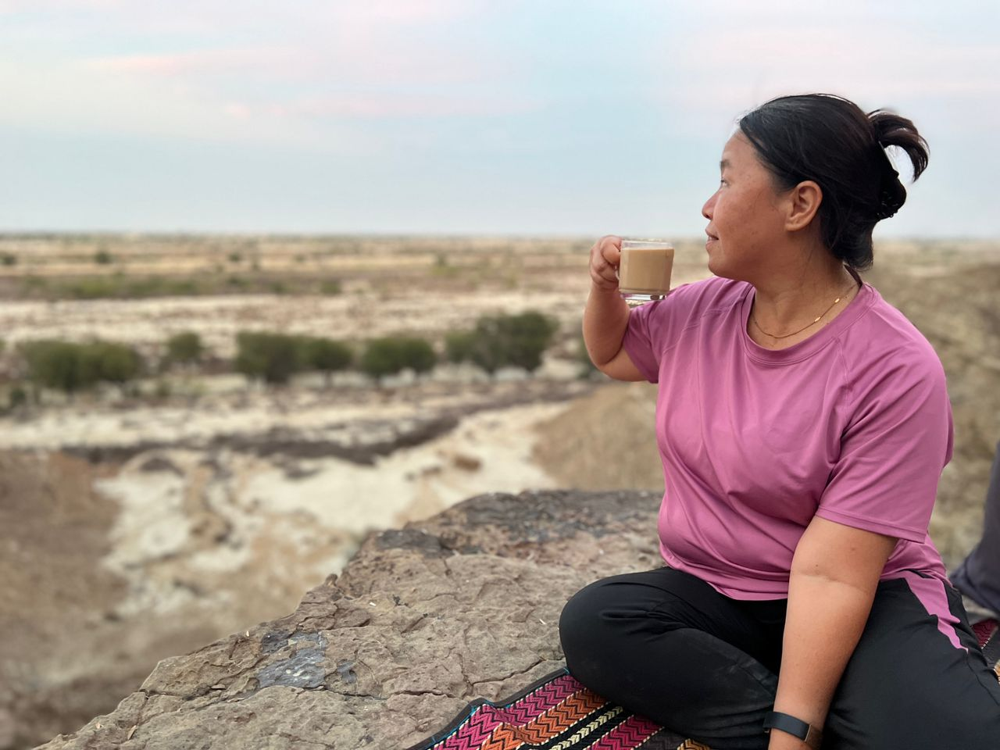
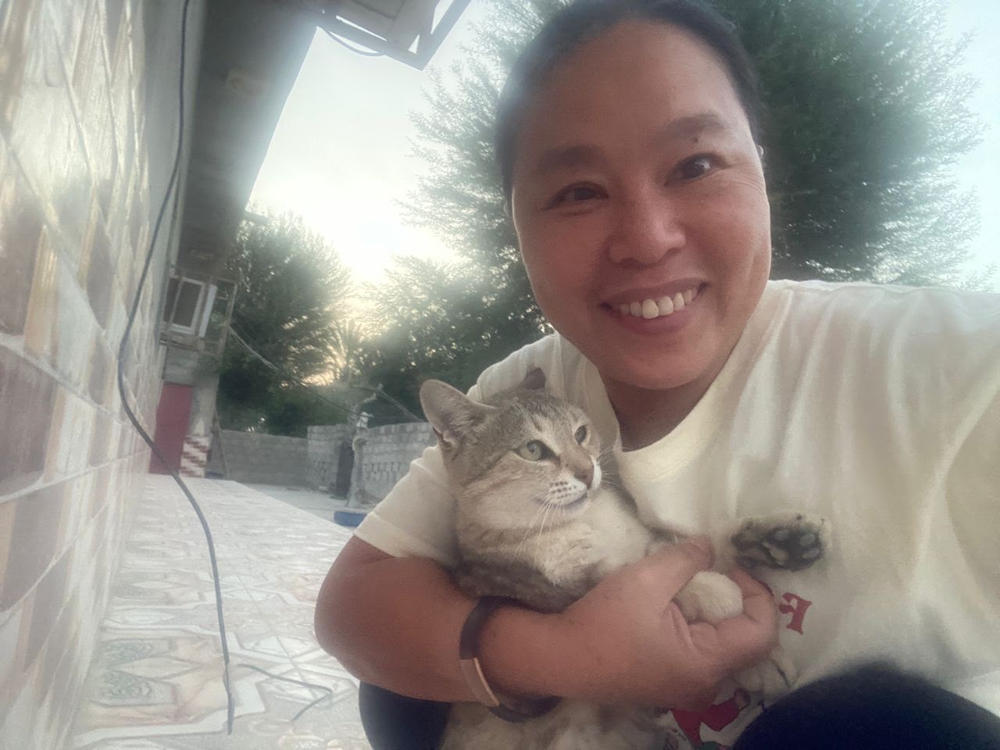

Real Story · 中文
陌生人，慢慢变成 family。
小土房之后，Chabahar 的冬天继续打开。 原本只是 neighbour 的一家人，后来打开了他们的大门，也打开了一个更长的 shelter。
从 14/01/2024 到 19/02/2024，我住在他们家。 这段时间不只是住宿，也不是普通 travel memory。 它更像是：一个陌生地方，慢慢允许我成为其中的一小部分。
Yesra、Mrs. Khatun，还有他们的家人，变成我 Iran journey 里面最深的一段 family memory。 有些照片里，女性或孩子会转身、遮脸，或者不正面出现。 这是出于 Baluchistan local culture、privacy 和 respect，不是遗憾，而是这段关系的一部分。


The Loophole Photo
Everyone turned around.
Mrs. Khatun once brought me to visit her relatives. As usual, I said I wanted to take a photo. Because women there could not simply show their faces publicly, everyone turned around.
I laughed because I felt I had found a loophole: no face shown, but the memory still stayed. This is why the photo is important. It shows not only people, but also trust, boundaries, and humour.
Local Activity
Hill hiking and tea on the top.
Yesra’s brother also brought me out for local activity: hill hiking, then cooking tea on top of the hill. It was simple, but it was very local — not a tourist arrangement, not a paid tour, just someone bringing me into their ordinary way of spending time.

English Memory Summary
From a neighbour’s gate to a family chapter.
After the little old house in Chabahar, Tuzi was welcomed by a neighbouring family. From 14 January to 19 February 2024, their home became her long winter shelter in Iran.
This page begins the Iran Family chapter: Mrs. Khatun bringing Tuzi to visit relatives, people turning around to protect privacy, Yesra’s brother taking her hiking, and tea cooked on a hill. More memories will be added as the archive continues.
Family Care
They Fed Me Like Family.
During Tuzi’s stay in Chabahar, the family quietly took care of her while she sat in the room editing videos. Breakfast, lunch, and dinner would come without being asked. It was not a service exchange and not about money. It was the kind of care given to someone they had chosen to shelter.
Even when Tuzi bought groceries like chicken or fish, the family still made sure the cooking was for her comfort. The one outside food they truly enjoyed together was the BBQ Tuzi received after helping a local restaurant owner film a video — a funny moment of hard work turning into a shared family meal.
Small Companion
The Cat Who Became My Chabahar Pet.
In Yesra’s house, even the cat became part of Tuzi’s temporary family during her stay in Chabahar. In between editing, resting, and sharing meals with the household, this little companion quietly entered the memory too.

Heart Statement
有些门打开以后，不只是让你进去，而是让你留下来。
Strangers did not become family in one moment. They became family through tea, doors, laughter, privacy, and many ordinary days.